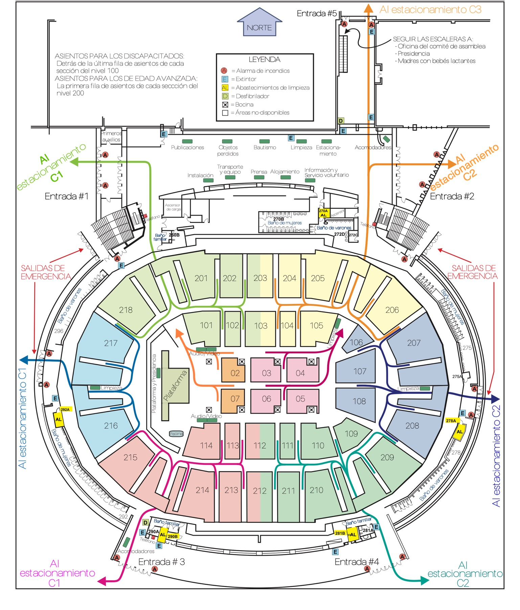

House remodel
A full interior rebuild of a 1920s frame house — living room and kitchen, taken back to studs and rebuilt.


Fifteen years of residential remodels, assembly buildings and tenant work — drawn to be built, and carried through the permit process.

Fourteen years of files, compressed to the work that shows range: houses, assembly halls, a restaurant, and the paperwork that holds them together.
Sheet crops, borders and title blocks removed. Click any drawing to read it full size.
What the drawings turned into. Photographs from completed and in-progress projects, followed by the concept boards that shaped them.
A full interior rebuild of a 1920s frame house — living room and kitchen, taken back to studs and rebuilt.
Renovation of a training campus common area: acoustic ceiling, living wall, built-in planters and seating.


Classrooms for international student training, and a 230-seat lecture hall remodel in Addison, Illinois.


Compact staff accommodation — kitchenette, living and sleeping in one room, built for a missionary campus.

Concept studies for a branch complex: converting a maintenance building to offices, adding storage mezzanines, and two options for a new recreation building with pool and gym.


Concept design proposal for two-storey residential blocks — two apartments per building, retention wall and shared services.

I am an architect and project lead working between Chicago and clients worldwide. Over fifteen years I have coordinated design teams of twenty-plus architects and engineers on facility renovations, and taken small residential projects from a measured survey to a signed permit.
The work on this page is deliberately ordinary and deliberately varied: a sunroom, a garage, a kitchen, an assembly hall that seats several hundred. What they share is that every line had a reason, and every one of them was built or approved.
I work in English and Spanish, present to boards and contractors, and I am as comfortable in a permit queue as at a desk.